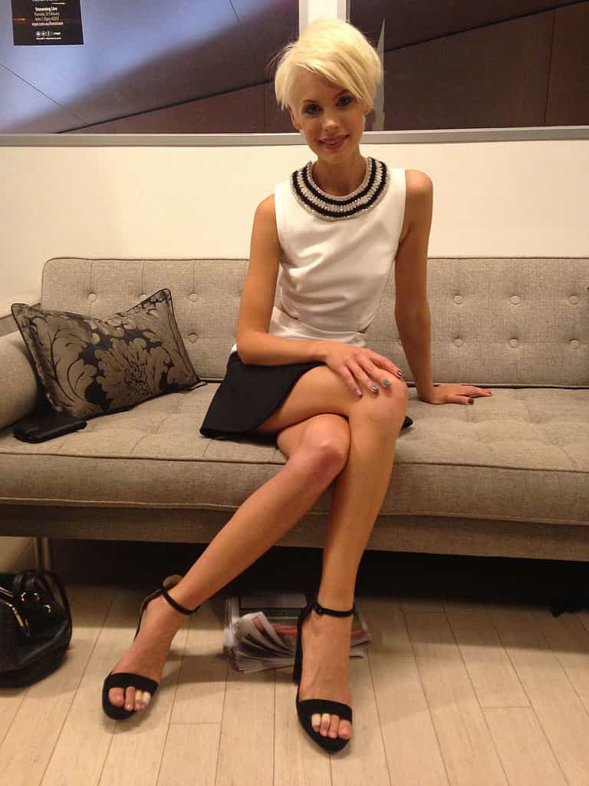

< < < Back
Women Objectify Themselves As Naked Food Platters For Money And Feminists Blame “Misogyny” – Return Of Kings
SJWs are calling for the boycott of Sydney’s Circular Quay Cruise Bar after naked women were employed as living food platters. As is typical for these kinds of fabricated controversies, the social justice crowd has ignored both the presence of scantily clad men and the rather huge issue about large numbers of women who willingly participated in the “misogynistic” relaunching of this business.
The women working as living food platters, who have a number of photos circulating, all look healthy. They are not starving. No one forced them to be hired as living food platters. One can easily imagine that the money they were paid for the role far surpassed the hourly rate they could achieve as a waitress or coffee girl.
It is therefore a woeful case of misapplied anger for people to be blaming Circular Quay Cruise Bar. The women had a choice to participate. Furthermore, if the event was so misogynistic, what does that say about the female guests who went to and remained at the event for hours, cheerfully using social media to highlight their presence at the establishment?
Funny how the women involved aren’t called “misogynists”
The worst aspect of this otherwise very overhyped non-event is the steadfast refusal by SJWs to single out the many females who made the event possible, including the naked girls themselves, other women employed to organize the relaunch and the countless female guests who attended.
Among others, so-called Myer “ambassador” Kate Peck has, if you appropriate the “logic” of do-gooder feminists, thoroughly objectified women and perpetuated rape culture. Will Laura Pintur create a petition calling for her sacking, just as she and others successfully nagged supermarket chain Coles to stop selling men’s magazine Zoo Weekly?
The calls by SJWs to boycott the establishment featuring the female food platters are a hundred light years away from surprising. Supposedly dedicated to advancing “womens’ rights,” they engage in a discourse, if you can even call it that, that reduces female autonomy to something resembling that of a common household insect. These easily offended souls are more concerned with promoting the infantilization of adult women, who should be thoroughly responsible for their actions, than actual children.
Most men can’t fund their educations or lifestyles via sugar babying, prostitution or being naked food platters

If the appearance of naked female food platters was “misogynistic”, Kate Peck, an “ambassador” for major department store Myer, is an unqualified misogynist. She boasted on Twitter that she “dressed” some of the women.
As mentioned above, men were employed at the Circular Quay Cruise Bar relaunch, adorned in nothing more than their underwear. In general, however, men of university or similar age are unable to earn anything close to the sort of money women can as sugar babies, prostitutes, or other “shiny things” such as promotions models.
The SJW penchant for blaming “patriarchy,” “rape culture,” and other buzzwords and concepts is just a method for distracting attention from the willing, calculated participation of innumerable women in their own profitable and ego-satisfying self-objectification.
Australia has a much better minimum wage than the United States, yet retail and hospitality work still pays amongst the lowest hourly rates in the economy. Many women do not want around $20 per hour for their efforts. It is true that these self-objectifying jobs vary in their remuneration, but the attention itself is also intoxicating. They want to feel desired. If someone wants their education or general lifestyle funded, they will find a way. It’s a matter of which way they choose.
If we excluded the legal ramifications, would anyone feel sorry for a male marijuana dealer who sells weed to put themselves through college? No. He would be told to get a real, honourable job and suck it up.
Start calling out the women furthering this “misogyny” and “rape culture”
A woman attending the relaunch, Sarah Gillett, is an interesting example of how women bragging about their appearances in these kinds of events are spared condemnation. It is much easier for SJWs to blame amorphous ideas of “misogyny” and broader masculinity than females like Gillett.
The compulsive self-aggrandizers happily pepper their Instagram and additional social media accounts with images of them being hand fed by the poor creatures feminists claim are mere pawns for “rape culture” and “misogyny.” So isn’t Sarah Gillett promoting rape culture and misogyny by this standard?
But no, the solution selected is to blame the “patriarchy” which allegedly serves and is supported by every man, not those, male and female, there on the night. Everything is reducible to attacking men and constructing a narrative that cuts any and all personal responsibility demanded of women. This is nevertheless very good for critics of SJW crusades, as ROK has emphasized again and again. Our opponents consistently sow the seeds of their own discrediting.
SJWs are showing their true, self-serving colors

Well-paid “victims” of the indomitable patriarchy.
Overextension, whether it involves naked female food platters or men’s magazines, continues to out feminists and other SJWs. Their self-entitlement and belief in their own infallibility will expose them in story after story, like in the past. It is our job as producers and consumers of neomasculine and red pill literature to capitalize on these mistakes and disseminate them to an ever wider audience of sympathizers and those yet to be converted to the cause.
Just as my colleagues and I are vehicles for positive warning and change, so, too, are you. Be agents of improvement for both yourself and society. Spread these stories openly when you can and, fundamentally, subtly inculcate your friends and associates with our values.
Preaching can be counterintuitive but leading implicitly, by example, can work wonders and further our goals.
Read More: Why I Objectify Women